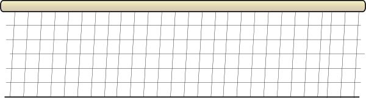

Valleyball
something awesome
best teams :
- Brazil
- Poland
- USA
but Russia actualy not so bad we are fifth

Haikyu! is a Japanese shōnen manga series written and illustrated by Haruichi Furudate. Individual chapters have been serialized in Weekly Shōnen Jump since February 2012, with bound volumes published by Shueisha. The series was initially published as a one-shot in Shueisha's seasonal Jump NEXT! magazine prior to serialization. As of December 2017, twenty-nine volumes have been released in Japan. An anime television series adaptation by Production I.G aired from April 2014 to September 2014, which has been licensed for digital.The second season of the anime aired from October 2015 to March 2016. A third season aired from October 2016 to December 2016